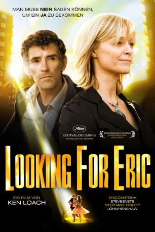

#1753 Looking for Eric
 
 IMDB-Wertung: 7.2 / 10
IMDB-Wertung: 7.2 / 10  Metascore: 66
Metascore: 66 
Eric ist am Arsch! Im Job läuft nichts mehr nach Plan und zuhause mit den beiden Stiefsöhnen erst recht nicht mehr. Doch das wäre vermutlich alles noch zu verkraften, hätte der Fußballfan nicht vor 25 Jahren seinen größten Fehler begangen und die Liebe seines Lebens, Lily, sitzen gelassen. Es gibt nur einen Mann, der Erics Leben wieder auf Vordermann bringen kann: Eric Cantona, der legendäre Stürmer von Manchester United. Statt auf dem Poster an der Wand zu hängen, sitzt der Franzose plötzlich leibhaftig in der Küche seines Namensvetters - und die "Operation Cantona", an der auch Erics Freunde tatkräftig beteiligt sind, kann beginnen. Denn von seinem Idol lernt Eric endlich, dass man auch mal 'non' sagen muss, um ein Ja zu bekommen. Vor allem aber bekommt er die lang ersehnte zweite Chance bei der Liebe seines Lebens.
Jahr: 2009
Dauer: 116 Minuten
FSK: 12
Land: England Studio: Delphi Filmverleih ProduktionTonspuren:
Untertitel: Deutsch,
Auflösung: 1080p (1920x1040) Größe: 8765 MB
Genre: Komödie, Drama, Fantasy, Sport
Regisseur: Ken Loach
Drehbuch: Paul Laverty
Soundtrack: George Fenton
Darsteller:
 Steve Evets als Eric Bishop
Steve Evets als Eric Bishop Eric Cantona als Lui-même, Eric Cantona
Eric Cantona als Lui-même, Eric Cantona Gerard Kearns als Ryan
Gerard Kearns als Ryan- Lucy-Jo Hudson als Sam
 Matthew McNulty als Young Eric
Matthew McNulty als Young Eric- Laura Ainsworth als Young Lily
- Steve Cook als The Emperors of Rhythm
 David Beckham als Himself , archive footage, uncredited
David Beckham als Himself , archive footage, uncredited- Nicky Butt als Himself -- Manchester United Player , archive footage, uncredited
- Stephanie Bishop als Lily
- Stefan Gumbs als Jess
- Cole Williams als Daisy
- Dylan Williams als Daisy
- Maxton G. Beesley als Eric's Father
- Kelly Bowland als Ryan's Girlfriend
 Julie Brown als Nurse
Julie Brown als Nurse John Henshaw als Meatballs
John Henshaw als Meatballs- Justin Moorhouse als Spleen
- Des Sharples als Jack
- Greg Cook als Monk
- Mick Ferry als Judge
- Smug Roberts als Smug
- Johnny Travis als Travis
- Steve Marsh als Zac
- Cleveland Campbell als Buzz
- Ryan Pope als Fenner
- Omar Abdul als The Emperors of Rhythm
- Adam Beresford als The Emperors of Rhythm
- Ciaran Clancy als The Emperors of Rhythm
- Sheila Diamond als The Emperors of Rhythm
- Marvin Gilbert als The Emperors of Rhythm
- Ben Jackson als The Emperors of Rhythm
- Wendy Kennedy als The Emperors of Rhythm
- Trevor Dwyer-Lynch als The Emperors of Rhythm
- Jake Manning als The Emperors of Rhythm
- Tom Meredith als The Emperors of Rhythm
- Eddie Riley als The Emperors of Rhythm
- Conor Saunders als The Emperors of Rhythm
- Venn Tracey als The Emperors of Rhythm
- Guy Wills als The Emperors of Rhythm
- Denis Irwin als Himself - Manchester United Player , archive footage, uncredited
- David James als Himself -- Liverpool Goalkeeper , archive footage, uncredited
- Brian McClair als Himself - Manchester United Player , archive footage, uncredited
Datei: X:\2009(G-M)\Looking for Eric (2009, FSK12, 1920x1040).mkv seit 16.08.2015
Festplatte: HD 2009(G-Z)-2010(A-F)
 Es gibt insgesamt 82 Filme in der Gruppe '2009(G-M)'
Es gibt insgesamt 82 Filme in der Gruppe '2009(G-M)'